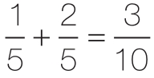

在西方教育体系中，儿童花费大量时间学习机械算术。然而，我们越来越怀疑，许多人到了成年也没有真正理解什么情况下适宜运用这些知识。由于缺乏对算术原则的深刻理解，他们有可能成为只会计算不会思考的“小型计算机器”。约翰·艾伦·保罗斯（John Allen Paulos）给这样的人起了一个名字——数学盲（innumeracy），即算术领域的文盲（illiteracy）26。数学盲认为数学仅仅是一种表象，这种推论非常容易得出十分离谱的结论。下面是几个例子：
·

，因为1+2=3和5+5=10。· 0.2+4=0.6，因为4+2=6。
· 0.25大于0.5，因为25大于5。
· 一盆35的水，加上又一盆35的水，是一缸很烫的70的水（我6岁的儿子说的）。
· 今天的温度是80多华氏度，昨晚温度为40华氏度，今天比昨晚暖和两倍。
· 星期六有50%的可能会下雨，周日也有50%的概率下雨，所以有100%的把握这个周末会下雨（保罗斯在本地新闻里听到的）。
· 1米等于100厘米。由于1的平方根是1，而100的平方根是10，难道不应该得出这样的结论：1米等于10厘米？
· 令X太太感到震惊的是，她新做的癌症检测呈阳性。她的医生证明测试高度可靠，98%的癌症患者读数结果是阳性的。因此，X太太有98%的可能性会得癌症。对吗？（错。现有的所有信息都无法得出定论。假设，10 000人中只有1人患有这种类型的癌症，并且测试的假阳性率为5%。10 000人参加测试，大概有500人的检测结果呈阳性，但其中只有一人真的患有癌症。在这种情况下，不论X太太的结果如何，仍然只有1/500的可能是癌症。）
在美国，数学盲已升级为全国关注的一件大事。有报告警示我们，早在学龄前，美国的儿童就远远落后于中国和日本的同龄人。罪魁祸首就是教育系统的平庸组织以及不理想的教师培训。在法国，大约每隔1年，就会有类似的争议通报儿童的数学成绩又下降了。
法国数学教育家斯特拉·巴鲁克（Stella Baruk）巧妙地分析了教育系统在儿童数学学习困难上所承担的责任27。她最喜欢的例子是下面这个颇富喜剧性的问题：“船上有12只绵羊和13只山羊，船长几岁？”不管你相信与否，在一项官方调查中，把这个问题正式地呈现给法国一、二年级的学生，相当多的学生会认真地回答：“25岁，因为12+13=25。”这个关于数学盲的例子令人吃惊！
尽管我们有严肃的理由关注广泛存在的数学能力缺失，但是我个人坚信：不应该只责怪教育体制。数学盲的产生有更深层次的根源：它根本上反映了人脑为存储算术知识所付出的努力。很显然，数学盲的情况各有不同，从认为温度可以相加的孩子，到不能计算条件概率的医学院学生。然而，所有这些错误共有的特点是：“受害者”不考虑他们所执行的计算之间的关系，直接跳到结论。很不幸，这与心算的自动化相对应。我们对机械计算如此熟练，以至于算术运算有时会在我们的头脑里自动启动。通过以下几个问题，检查一下您的反射：
· 一个农民有8头奶牛，除了5头都死了。还有多少头奶牛？
· 朱迪有5个布娃娃，比凯茜的少2个。凯茜有多少布娃娃？
对这两个问题，你是否有回答“3”的冲动？仅仅“少”或“除了”这两个词的出现，就足以触发我们大脑中的自动减法流程。我们必须与这种自动化抗争。我们需要有意识地分析每个问题的含义，形成对具体情况的内在模型。只有这样，我们才能意识到，第一个问题的答案是5，而在第二个问题中要把5和2相加。为了抑制减法的自动加工，大脑前部一个被称为前额叶的区域被激活，这个区域负责非常规策略的执行和控制。因为前额叶皮层成熟得很慢，至少要到青春期，甚至更晚，因此儿童和青少年容易受到计算冲动的影响。他们的前额叶区域尚未学会避免落入算术陷阱所需要的精细控制策略。
因此，我的假设是，难以控制分布在多个脑区中的算术流程的激活，会导致数学盲的产生。正如我们将在第7章和第8章中看到的，数字知识不只位于大脑的一个特定区域，而是广泛分布在神经网络中，由每个网络独立执行各自简单、自动的计算。我们与生俱来的“累加器回路”赋予我们对数量的直觉。随着语言的习得，一些其他回路开始发挥作用，比如专门操作数字符号的回路，以及口头数数的回路。对于乘法表的学习，还关联了另外一种专门用于机械言语记忆的回路，还有非常多类似的回路。数学盲的产生，正是因为多重回路以一种不协调的方式自动反应。要正确判断这类数学题，需要前额叶皮层的指挥，这种能力往往很晚才会出现。儿童受制于自身反射性的反应。无论学习数数还是减法，他们只专注于计算套路，而没有与数感建立适当的联系。于是，数学盲便产生了。